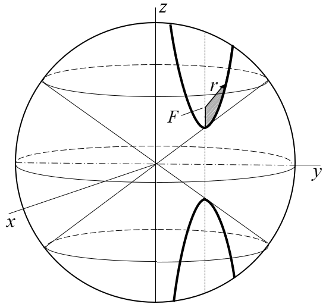
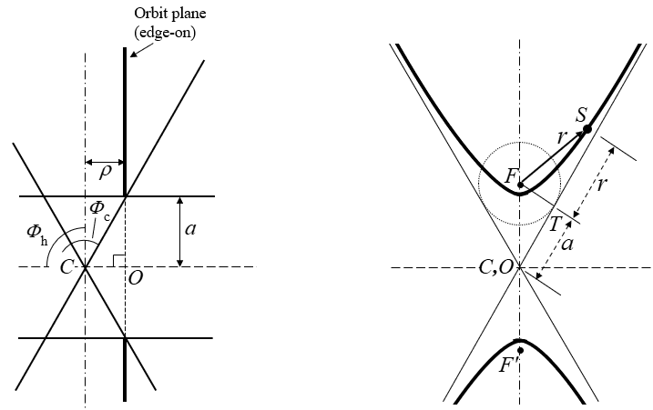
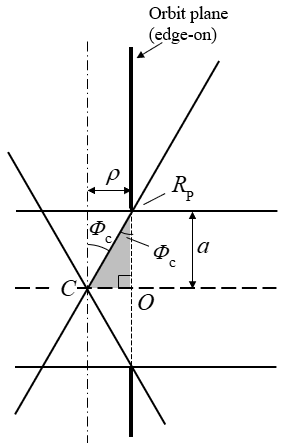
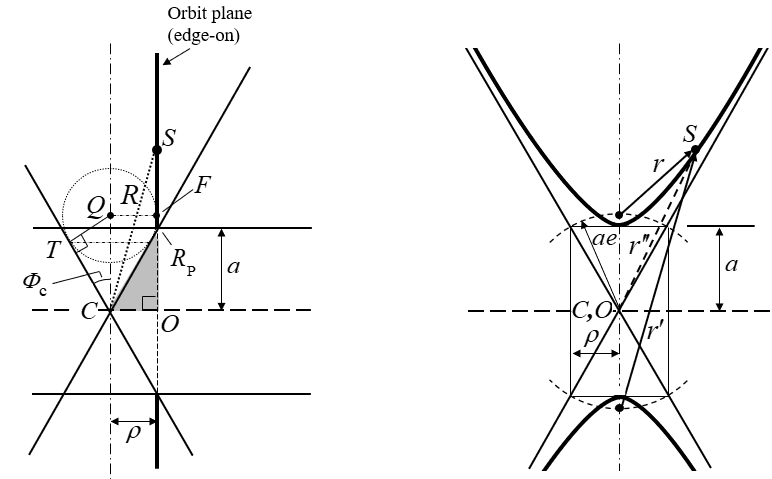
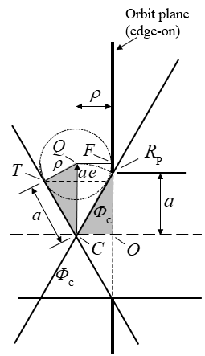
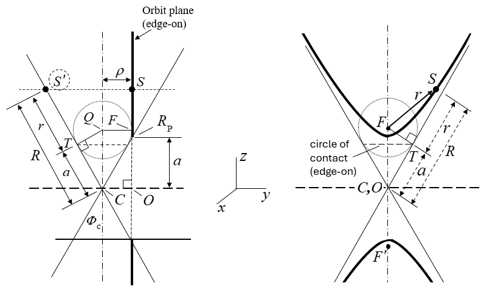
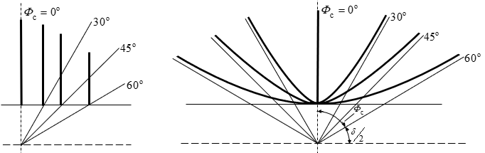

Hyperbolic Orbits
Hyperbolic orbit analysis and results
As with elliptical orbits, classical analyses of hyperbolic orbits are two-dimensional. In the absence of other forces, the constant angular momentum vector, h, constrains orbital motion to a plane. Unlike the ellipse, the hyperbolic cutting plane slices both nappes of the cone (Fig. F-3). Both "planar motion" and "conic section" can be captured together by embedding the orbit in a cone, as introduced in Fig. F-2. Consistent with that construction, a hyperbolic orbit is shown in a conical frame in Fig. H-1. The shaded area represents the area swept in equal times, per the constant angular momentum and analogous to Kepler's second law.
The construction in Fig. H-1 relies on a special alignment: the orbit axis, the line through the focus F and periapsis, is parallel to the cone axis z. Equivalently, the orbital plane is parallel to the cone axis, offset from it by a distance ρ. Any plane parallel to a cone's axis cuts both nappes, so this alignment always produces a hyperbola. The branch on the upper nappe is the physical trajectory about F, and the branch on the lower nappe is its mirror image. The perpendicular from the apex C meets the orbital plane at a point O, so line CO is parallel to h. The edge view that follows shows that O is the center of the hyperbola, that the offset ρ equals the semi-conjugate axis b, and that the cone half angle is fixed by the eccentricity.

Because a hyperbolic trajectory is open, neither the cone nor the sphere in Fig. H-1 has a natural boundary. The distance R from the apex to a point on the orbit, shown below to equal r + a, grows without limit as the spacecraft recedes along its asymptote. The sphere drawn in the figure is therefore only a convenient cutoff for illustration. The true construction extends indefinitely, with the orbit remaining on the cone surface while its direction of travel approaches that of the asymptotes. This contrasts with the elliptical case, where the closed orbit stays within a sphere of finite radius.
Edge and Face Views
The elliptical and hyperbolic models differ in which quantity carries eccentricity. In the elliptical model, the cone half angle is fixed at 45° and the eccentricity is carried by the tilt of the orbital plane (Eq. E-7). In the hyperbolic model, the plane does not tilt relative to the cone axis. It stays parallel to it, and the eccentricity is carried instead by the opening of the cone.
Figures H-2 and H-3 show a single hyperbolic orbit in this arrangement from two directions. In the edge view, Fig. H-2, the line of sight lies in the orbital plane, so the plane appears as a vertical line a distance ρ from the cone axis. The plane meets the upper nappe at the vertex, a height a above the apex C, and the lower nappe at the mirror point a height a below. The horizontal line through C meets the plane at right angles at O. Two angles are marked at C: the cone half angle \(\Phi_c\), measured from the axis to the cone's surface line, and \(\Phi_h\), the direction of CO measured from the same axis. Because CO is parallel to h and the plane is parallel to the axis, \(\Phi_h = 90^\circ\) for every hyperbola in this model. On the Elliptical page, \(\Phi_h\) varied with eccentricity while \(\Phi_c\) stayed at 45°. Here the roles are exchanged.
In the face view, Fig. H-3, the line of sight is along h, perpendicular to the orbital plane, so the apex C lies directly behind O and the two are labeled together. The physical branch curves about the focus F on the upper nappe, and its mirror image about F′ on the lower nappe. The straight lines through C,O are the outline of the cone seen from this direction. They are also the asymptotes. The two surface lines that form this outline lie in the plane through the axis parallel to the orbital plane, so they point in the directions the trajectory approaches far from F, and seen face on, the asymptotes through O fall exactly on them. Each asymptote therefore makes the angle \(\Phi_c\) with the orbit axis.

Fig. H-3 — Face view of the same orbit (right).
Edge View with Derivation of ρ and R
The relation between the apex distance R and the orbital radius r can be built up in five steps, starting from the edge view of Fig. H-2. Each later step adds one element to the figure.
Step 1. The center O
In Fig. H-2, CO = ρ, and because the plane is parallel to the axis, CO is horizontal. What remains is to show that O is the center of the hyperbola.
The cone and the plane are both symmetric about the horizontal plane through C: turning the picture upside down leaves both unchanged. The branch on the lower nappe is therefore the mirror image of the branch on the upper nappe, and the point midway between them, the center of the hyperbola, is level with C. That point is O, where the asymptotes cross in the face view of Fig. H-3.
Step 2. Periapsis \(R_{\mathrm{P}}\) and triangle \(R_{\mathrm{P}}OC\)
Periapsis \(R_{\mathrm{P}}\) is the vertex of the near branch, and its distance from the center is the semi-major axis, so \(OR_{\mathrm{P}} = a\). \(R_{\mathrm{P}}\) lies in the orbital plane directly above O, and it also lies on the cone, so in the edge view it is the point where the plane line crosses the outline of the cone.
This gives the shaded right triangle \(R_{\mathrm{P}}OC\) in Fig. H-4, with the right angle at O and legs OC = ρ and \(OR_{\mathrm{P}} = a\). Because \(OR_{\mathrm{P}}\) is parallel to the cone axis, the angle at \(R_{\mathrm{P}}\) equals the cone half angle \(\Phi_c\), so

Step 3. The Dandelin sphere
Now place a sphere inside the upper nappe so that it touches the cone all the way around and also touches the orbital plane. This is a Dandelin sphere, named for Germinal Dandelin, who used it in 1822 to show where the focus of a conic section comes from. The point where the sphere touches the orbital plane is the focus F.
By symmetry, the center Q of the sphere lies on the cone axis. The radius QF is perpendicular to the orbital plane, so QF is horizontal, F is level with Q, and the radius equals the distance from the axis to the plane, ρ. The sphere touches the cone along a horizontal circle, the circle of contact, which meets the outline of the cone at T. The radius QT is perpendicular to the cone's surface line at that point (Fig. H-5).

Fig. H-6 — Face view with the central rectangle (right).
Step 4. Two matching triangles
Compare triangle CTQ with triangle \(R_{\mathrm{P}}OC\) (Fig. H-7). Each has a right angle, at T and at O. Each has the angle \(\Phi_c\), at C and at \(R_{\mathrm{P}}\). In each, the side opposite \(\Phi_c\) has length ρ: QT in one, OC in the other. Two right triangles with the same angle and the same side opposite it are congruent, so
Since F is level with Q, the length CQ is also the distance from the center to the focus, c = ae. So \(CR_{\mathrm{P}} = ae\), and triangle \(R_{\mathrm{P}}OC\) gives \((ae)^{2} = a^{2} + \rho^{2}\). For every hyperbola, \((ae)^{2} = a^{2} + b^{2}\), where b is the semi-conjugate axis. Therefore the offset of the plane is b, and with \(p = b^{2}/a\),
The same triangle gives the cone half angle:
The arc of radius ae about C passes through both Q and \(R_{\mathrm{P}}\). Triangle \(R_{\mathrm{P}}OC\) has the same sides a, b and ae as the corner triangle in the standard drawing of the hyperbola, where the arc of radius ae about O passes through F and the corners of the central rectangle, shown in the face view of Fig. H-6.

Step 5. Equal tangents and R = r + a
Figs. H-8A and H-8B add a satellite at S. Fig. H-8A is the edge view, and Fig. H-8B is the view normal to the orbital plane, drawn to the same scale. Two properties of the Dandelin sphere carry the argument. The sphere touches the orbital plane at the focus F, and it touches the cone along the circle of contact, which appears edge-on as the dashed horizontal line through T in both views.
From any point outside a sphere, every line segment drawn from that point to touch the sphere has the same length. Two such segments run from S:
- SF lies in the orbital plane, which is tangent to the sphere at F, so SF touches the sphere there. Its length is the orbital radius r.
- The second runs along the cone's surface line through S, from S down to the point T where that line touches the circle of contact.
A tangent segment is perpendicular to the radius at its point of contact, so SQT and SQF are right triangles that share the hypotenuse SQ and have equal legs QT = QF = ρ. Their remaining legs are therefore equal, and ST = SF = r.
Step 4 showed that CT = a, and the same holds on every surface line, since the circle of contact lies at the same slant distance from the apex all the way around. The near branch lies entirely above the circle of contact, so C, T and S fall in order along one straight surface line, and the lengths add:
The surface line through S generally does not lie in the plane of Fig. H-8A. Turning it about the cone axis onto the outline of the cone preserves every length along it. That turned position is S′, joined to S by the dotted horizontal line, and R, r and a are dimensioned at true length along it. In Fig. H-8B, C and O coincide and Q lies directly behind F. The solid arrow SF lies in the orbital plane and shows the radius r at true length. The dashed dimension lines lie along the cone's surface, outside the orbital plane, and show the same lengths a and r as in Fig. H-8A. The segment marked r along the surface is not the radius itself, but the equal-tangent property guarantees it has the same length.

Fig. H-8B — View normal to the orbital plane (right).
Summary
The five steps give the edge-view results together:
\[ \rho = b = \sqrt{ap}, \qquad \cos\Phi_c = \frac{1}{e}, \qquad R = r + a \]
As a check, at periapsis r = a(e − 1), and Eq. H-5 gives R = ae, which is \(CR_{\mathrm{P}}\) from Step 4.
Eccentricity does not appear in Eq. H-5. The elliptical relation, \(R^{2} = r^{2} + ap = r^{2} + a^{2}(1 - e^{2})\), depends on e. The hyperbolic apex distance depends only on a and r, and the eccentricity enters through the offset ρ and the cone angle \(\Phi_c\).
The Center Distance r″
Fig. H-6 shows the orbit face on, with the satellite S and three distances to it: r from the focus F, r′ from the second focus F′, and r″ from the center O. The first two are tied together by the defining property of the hyperbola. For every point on the near branch, the distance to the far focus exceeds the distance to the near focus by the transverse axis:
Because O is the midpoint of FF′, the segment OS is a median of triangle FSF′. Writing the law of cosines for triangles SOF and SOF′, whose angles at O are supplementary, and adding the two results eliminates the angle and gives the median length:
Substituting r′ = r + 2a from Eq. H-6 and \((ae)^{2} = a^{2} + b^{2}\) gives
Now return to the edge view. Because CO is perpendicular to the entire orbital plane, it is perpendicular to OS for every position S, and triangle COS has a right angle at O. In Fig. H-5, S has been turned about CO into the plane of the drawing, so the triangle appears at its true size, with legs ρ and r″ and hypotenuse R:
With ρ = b from Eq. H-3, Eqs. H-8 and H-9 together give \(R^{2} = (r + a)^{2}\), which is Eq. H-5 reached by a second route. Step 5 obtained it from the Dandelin sphere and the equal-tangent property; here it follows from the face view and the right triangle COS.
At periapsis, r″ = a. This right triangle is the closest counterpart of the elliptical edge view. Both have the leg \(\sqrt{ap}\) from the apex perpendicular to the orbital plane. In the ellipse its foot is at the focus F, giving \(R^{2} = r^{2} + ap\). In the hyperbola its foot is at the center O, giving \(R^{2} = r''^{2} + ap\).
An Equal-Energy Family
For a fixed semi-major axis a, equivalent to a fixed total specific energy of \(+\mu/2a\), the eccentricity of a hyperbola is free to range from the rectilinear limit e = 1 upward without bound. Fig. H-9 shows four members of this equal-energy family, on cones with half angles of 0°, 30°, 45° and 60° (e = 1, 1.155, \(\sqrt{2}\) and 2 by Eq. H-4). It is the hyperbolic counterpart of the elliptical family in Fig. E-4.

The edge view on the left shows each orbital plane as a vertical line at \(\rho = a\tan\Phi_c\) from the cone axis, standing farther out as the cone opens, with every vertex at the same height a above C. The face view on the right shows the matching trajectories, each drawn in its own plane and superimposed so that they share the vertex and the center O a distance a below it. At \(\Phi_c = 0\) the plane lies on the cone axis and the trajectory becomes a straight line along it: the rectilinear case. As the cone opens, the trajectory bends less, and as \(\Phi_c\) approaches 90° it flattens toward a straight line across the orbit axis, the undeflected path.
The bending can be stated exactly. Far from F the spacecraft travels along one asymptote on the way in and the other on the way out. The turn angle δ is the angle between the incoming and outgoing directions of travel, that is, the total angle through which the velocity is deflected by the encounter. Each asymptote makes the angle \(\Phi_c\) with the orbit axis (Fig. H-3). In Fig. H-9, the 60° member shows that each asymptote therefore makes the angle \(\delta/2 = 90^\circ - \Phi_c\) with the x-y plane, so the two asymptotes together turn the path through
The four members in Fig. H-9 are turned through 180°, 120°, 90° and 60°. With \(\cos\Phi_c = 1/e\), Eq. H-10 is the classical turn angle relation \(\sin(\delta/2) = 1/e\). What the family shares is the speed at great distance. As r grows without limit, the vis-viva equation \(v^{2} = \mu(2/r + 1/a)\) gives \(v_\infty^{2} = \mu/a\) for every member. The orbits in Fig. H-9 arrive and leave with the same speed and differ only in how far that speed is turned. This parallels the elliptical family, whose members all share the same period.
Set side by side, the two families divide the work in opposite ways. In Fig. E-4 a single 45° cone carries every member, and the orbital plane tilts. Each ellipse appears edge-on as a chord of length 2a spanning the two surface lines, and the tilt of h, measured by \(\Phi_h\), carries the eccentricity. In Fig. H-9 the plane never tilts, \(\Phi_h\) stays at 90°, and each member needs a cone of its own. The vertex holds at height a, and the opening of the cone carries the eccentricity. In the ellipse, a appears as half of a chord of fixed length. In the hyperbola, it appears as the fixed height of the vertex above the level of C.
One element is common to both figures: the perpendicular from C to the orbital plane, of length \(\sqrt{ap}\), compared after Eq. H-9. Since \(ap = b^{2}\) for both the ellipse and the hyperbola, that length is the semi-minor axis of the ellipse and the semi-conjugate axis of the hyperbola (Eq. H-3). Across each family, b follows the eccentricity in opposite directions. For the ellipse, \(b = a\sqrt{1 - e^{2}}\) shrinks from a at the circle to zero at the linear limit. For the hyperbola, \(b = a\sqrt{e^{2} - 1}\) grows from zero at the rectilinear limit without bound.
The two families therefore meet at e = 1, where b = 0 and the perpendicular from C vanishes. Both limits are straight-line trajectories, but they sit differently in the cone. In the elliptical family the chord lies along a surface line of the cone, with F at the apex C. In the hyperbolic family the plane lies on the cone axis, O coincides with C, and F coincides with the vertex at height a above it.
From Vis-Viva to the Hyperbolic Time Equation1
The Elliptical page closes by carrying the Commonality integral through to Kepler's equation. The same integral, with the other sign, gives the time equation for the hyperbola. Commonality develops the vis-viva relation together with conservation of angular momentum into a single integral, good for all three conic types (Eq. C-4, C-5):
\[ \int \frac{r\,dr}{\sqrt{2ar - ap \pm r^{2}}} = \sqrt{\frac{\mu}{a}} \int dt \]
with the plus sign for the hyperbolic case (\(\mathcal{E} = +\mu/2a\)). Substituting p = a(e2 − 1), with a positive as Commonality specifies, completes the square under the root:
The sum a + r is the apex distance R of Eq. H-5, and ae is its value at periapsis, \(CR_{\mathrm{P}}\). Radial speed is therefore zero exactly where R = ae, at periapsis, as it must be. Separating variables gives the hyperbolic integral
\[ \int \frac{r\,dr}{\sqrt{(a + r)^{2} - a^{2}e^{2}}} = \sqrt{\frac{\mu}{a}}\, t + C \]
Carrying out the integral gives
Taking t = 0 at periapsis, where r = a(e − 1) and the root vanishes, fixes the constant at \(C = a\ln(ae)\). Dividing it into the logarithm leaves everything in terms of the single ratio (a + r)/ae:
\[ \sqrt{\frac{\mu}{a}}\, t = ae\sqrt{\left(\frac{a + r}{ae}\right)^{2} - 1} - a\ln\!\left[\frac{a + r}{ae} + \sqrt{\left(\frac{a + r}{ae}\right)^{2} - 1}\,\right] \]
That ratio is never less than one, so it can be written as a secant. Define the angle η by
The angle η plays the role that E plays in Eq. E-12. The root becomes \(ae\tan\eta\), and the time equation takes its trigonometric form:
Eq. H-14 is the hyperbolic counterpart of Kepler's equation (Eq. E-13), and like it, it comes directly from the starting integral with no separate argument. As r runs from periapsis out toward infinity, η runs from 0 toward 90°. Using \(R = r + a\), Eq. H-13 also reads \(\cos\eta = ae/R\): the cosine of η is the ratio of the apex distance at periapsis to the apex distance at the satellite.
The logarithmic term can also be written with a single tangent. From the half-angle identities, \(\sec\eta + \tan\eta = (1 + \sin\eta)/\cos\eta = \tan(\pi/4 + \eta/2)\), so Eq. H-14 takes the equivalent form
\[ \sqrt{\frac{\mu}{a}}\, t = ae\tan\eta - a\ln\tan\left(\frac{\pi}{4} + \frac{\eta}{2}\right) \]
which is the form given in the original derivation.1
Equivalence with the classical equation
The classical treatment writes the same motion with the hyperbolic anomaly H, defined by \(r = a(e\cosh H - 1)\), and the time equation \(\sqrt{\mu/a^{3}}\,t = e\sinh H - H\). Comparing the definition of H with Eq. H-13 shows
From \(\cosh^{2}H - \sinh^{2}H = 1\) and \(\sec^{2}\eta - \tan^{2}\eta = 1\), it follows that \(\sinh H = \tan\eta\). The inverse hyperbolic cosine has the logarithmic form \(\cosh^{-1}x = \ln\left(x + \sqrt{x^{2} - 1}\right)\), so
\[ H = \ln\left(\sec\eta + \tan\eta\right) \]
Substituting both into Eq. H-14 gives
\[ \sqrt{\frac{\mu}{a}}\, t = ae\sinh H - aH \]
which is the classical equation multiplied through by a. The two forms are term-for-term identical and return the same time for every r.
The link between η and H has a name. The Gudermannian function, after Christoph Gudermann, who studied it in the 1830s, maps a hyperbolic argument to a circular angle without passing through imaginary numbers:
\[ \eta = \operatorname{gd} H = \tan^{-1}(\sinh H), \qquad H = \operatorname{gd}^{-1}\eta = \ln\left(\sec\eta + \tan\eta\right) \]
Under this mapping each hyperbolic function of H becomes a circular function of η: \(\cosh H = \sec\eta\), \(\sinh H = \tan\eta\), and \(\tanh H = \sin\eta\). The first two are exactly the substitutions used above. The inverse form may be familiar from navigation: on a Mercator chart, the distance of a parallel from the equator is proportional to \(\ln(\sec\varphi + \tan\varphi)\), or equivalently \(\ln\tan(\pi/4 + \varphi/2)\), of its latitude \(\varphi\), the same expression that appears as the logarithmic term in Eq. H-14. The trigonometric form keeps the hyperbolic time equation in the same functions a reader already uses for the ellipse, and keeps a a positive length throughout.
The rectilinear case
Setting e = 1 (p = 0) in Eqs. H-13 and H-14 gives the rectilinear hyperbolic trajectory directly:
\[ r = a\sec\eta - a, \qquad \sqrt{\frac{\mu}{a}}\, t = a\tan\eta - a\ln\left(\sec\eta + \tan\eta\right) \]
Periapsis is now at r = 0, so the boundary condition r = 0 at t = 0 matches the other rectilinear trajectories. As on the Elliptical page, nothing about the integration changes at e = 1. The rectilinear case falls out of the general result, and only the sign carried in from the energy separates it from the rectilinear ellipse.
Elliptical-to-hyperbolic transition
Conic sections (elliptical, parabolic, and hyperbolic) take on a renewed structure in the conical reference frame. The transition from one type to another becomes smooth, perhaps continuous.
The two families use the cone differently. Every ellipse in this framework lies on a single cone with a fixed 45° half-angle, and the tilt of the orbital plane carries the eccentricity. Each hyperbola, with its plane parallel to the cone axis, needs a cone of its own, with \(\cos\Phi_c = 1/e\) (Eq. H-4). The half-angle therefore runs from 0° at the rectilinear limit e = 1 toward 90° as e grows without bound, and passes through 45° at e = \(\sqrt{2}\).
The apparent jump at e = 1, from a 45° cone for the ellipse to a 0° cone for the hyperbola, is not a break between the two families. As e approaches 1 with a held fixed, p and \(\rho = \sqrt{ap}\) go to zero together, and both constructions degenerate to a straight line through the apex. For the ellipse the cone loses its significance and the trajectory runs along a single generator. For the hyperbola the cone itself collapses to a line. The rectilinear trajectories of all three orbit types are compared on a later page.